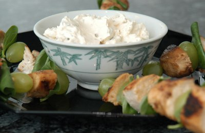

| Zutaten: | |
| Pouletbrust | |
| Trauben | |
| Basilikum-Blätter | |
| Cantadou mit grünem Pfeffer | |
| 1 El | grüne Oliven |
Pouletbrust braten und erkalten lassen.
Gebratene Pouletbrust in Würfel schneiden. Auf Spiess mit Trauben und Basilikum spiessen. Dabei darauf achten, dass das Poulet wirklich nicht mehr warm ist da sich die Basilikumblätter sonst verfärben.
Den Cantadou mit den Oliven vermischen und als Dip servieren.
Werbebroschüre von Cantadou
Gibt sicher einen tollen Snack für den Ausflug in die Badi oder an den Strand ab. Der Cantadou ist nicht wirklich flüssig genug um als Dip durchgehen zu können. Vielleicht müsste man ihn etwas mit Rahm oder Milch strecken? Hat zu Hause auch toll geschmeckt. RE, 26.8.2007
Am 25.3.2009 neu zubereitet für das Foto. War etwas langweilig. Der Dip wird halt nicht flüssig. Ich habe Rahm beigegeben aber so der Wahn ist das nicht. RE
@LINKBACK_TAG@ @WAKELOCK@